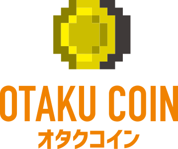
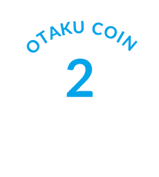

- JP
- EN
世界中のアニメ／漫画／ゲームファン向け
仮想通貨「オタクコイン」で
ICO検討開始

海外ファン2,000万人のTokyo Otaku Modeが主導
仮想通貨でアニメ制作委員会2.0へ


はじめに
私たちは、日本が誇るアニメ／漫画／ゲームなどのコンテンツ業界内に広く流通する「オタクコイン」（ERC20ベース）を構想し、現在、2018年夏頃のICOの実施に向けて検討を行っています。
新しい経済民主化の仕組みであるブロックチェーン技術を用いた仮想通貨、オタクコインを活用して、世界中のファンとクリエイターと関連企業を密接に繋げ、より良い作品づくりのための支援を世界中のファンがダイレクトに行える仕組みを構築していきます。
なお、この取り組みは、当初、Tokyo Otaku Mode（以下、TOM）およびアドバイザー／パートナーからなるオタクコイン準備委員会が主体者としてリードしておりますが、今後は、ブロックチェーン技術の根幹思想である非中央集権的な運営への転換・発展を想定しております。
今回、情報公開に踏み切ったのは、こうした構想に対して世界中のファンやコンテンツ業界の関連企業のみなさまからフィードバックをいただき、より良い取り組みに昇華させるためです。ぜひ忌憚のないご意見をお寄せいただければ幸いです。また、私たちの取り組みに賛同いただけるアドバイザー／パートナーを募集しています。こちらからお問い合わせください。
この文書はいかなる種類の目論見書にも商品内容説明書にも当たるものではなく、各地域における有価証券の募集、または有価証券投資の勧誘となることを意図するものではありません。ICOを実施するかどうか、実施した場合の方法、時期は未定です。また、日本居住者へのトークンセールの実施は未定です。ICO実施の際には、日本の仮想通貨法をはじめとする各国の法制に則った設計、勧誘、販売を行う予定です。
Tokyo Otaku Modeとは
世界2,000万人以上のファンに愛されているFacebookページや自社サイト「Tokyo Otaku Mode Shop」を通じて、海外向けに日本のアニメ／漫画／ゲーム／音楽／ファッションなどの商品を販売したり、最新情報を発信しています。他にもTOMに参加する国内外のクリエイターの協力のもとに商品化したTOMオリジナルグッズも企画・販売しており、世界130カ国以上のお客様に商品をお届けしています。これまで培ってきた海外向けビジネスのノウハウを活かし、企業の海外展開やインバウンド向け事業をサポートするサービスも行っています。詳しくはコーポレートサイトをご覧ください。

実現したい世界
私たちのコンセプト
毎日のファン活動が
もっと楽しくなる
- オタクコインによって、毎日のファン活動がワクワクするようなエンターテイメントを提供していきます
- オタクコインを持っているだけで、このコミュニティでステータスになるようなまったく新しい通貨のカタチを目指します
- 例えば、世界的に有名な漫画家にオタクコインのデザインしてもらったり、著名な音楽家に決済音やテーマ曲を作ってもらったり、あるいは、ARを通じて、空中に浮いているオタクコインをジャンプして獲得できたり
運営は
みんなの手に
- オタクコインの運営は、当初、私たちが主導しますが、究極的な目標は、私たちが介在しなくとも、オタクコインの運営が維持されていくことです
- 日本のコンテンツを愛する世界中のファン／クリエイター／関連企業など、コミュニティ全体で支え合う形を望みます
コミュニティ
全体で使う通貨

- 今回のICOは、本来的な意味での仮想通貨の利用／流通を目的としています
- 日本のコンテンツを愛する世界中のファンと、それを生み出すクリエイターやグッズメーカーなど、コミュニティ全体で利用されることを目指します
実現したいサービス
アニメ制作に
直接参加／支援
- 私たちが窓口となり、アニメ製作委員会やパイロットムービーの製作をしてくれるアニメ制作会社などに資金提供を行っていきます
- 次のアニメ作品を生み出すプロセスに交わり、世界中のアニメファンが間接的にクリエイターを支援できる仕組みを構築していきます
見逃している
良作に出会える
- アニメの供給過多により優れたアニメ作品が視聴されない、いわゆる「0話切り」問題を解決していきます
- 個人の趣味趣向に合ったファンと作品の”出会いの場”を提供することで、これまでなら見逃してしまっていた作品を、あなたにマッチングします
未来のよりよい
作品づくりに貢献

- 各国通貨の為替変動の影響を受けないオタクコインによって、各国に散らばっている通貨そのものをひとつにまとます
- ファンと関連企業がオタクコインを通じてシームレスに繋がることで、クリエイターやアニメ制作会社や関連企業の収益を向上させることができ、同時に、作品の質が向上していくという好循環を実現します
※ここに書かれている内容は検討段階であり、実施することを約束するものではありません
オタクコインでできること
想像してみてください
世界中のアニメファンが、日本に旅行したときにも、両替の必要がなく、アニメイベントに行列無しで入場でき、ブースの買い物もキャッシュレスで、為替も気にせずお釣りも気にする必要がない体験が当たり前になる世界を。
想像してみてください
いちファンが、アニメ制作の企画段階から内側に入って、より深く制作者やクリエイター、関連企業と関わり、例えば、続編の制作やグッズの企画などに、世界中のファンの声がダイレクトに伝わる世界を。
想像してみてください
いちファンが、アニメ制作の企画段階から内側に入って、より深く制作者やクリエイター、関連企業と関わりややりとりを行え、例えば、続編の制作やグッズの企画などに、世界中のファンの声がダイレクトに伝わる世界を。
想像してみてください
普段のファン活動の延長線上にあるアニメの視聴、あるいはその作品を友だちに伝えるちょっとしたアクションが、コンテンツ業界への貢献としての対価＝オタクコインを受け取れ、それをグッズに交換したり、イベントに参加したり、次の作品のための資金援助や寄付に使われる世界を。
そして企業のみなさま、想像してみてください
世界中で行われているファンの活動が、広くこの業界や、かけがえのないこの文化の維持・発展により深く繋がることで、海外のマネタイズがより大きなものとなり、各企業がコンテンツ業界の維持・発展のために永続的な活動を行える世界を。
非中央集権的な新しい仮想通貨であるオタクコインが流通することにより、これらは夢物語ではなくなります。これまでこの種の活動は、小さな活動としては数多く存在していました。しかし、局所的で力が分散され過ぎていたのです。
今回、このオタクコインの構想は、民主的かつ非中央集権的でオープンでフェアな技術を使い、コンテンツ業界内のあらゆる方々にあまねく活用してもらうためのものです。どこかの特定の企業のためにだけ行う活動ではありません。このミッションは、（理論上は）業界内すべてのファンと関係者の力を集約できる類のミッションであります。こうした力が集まれば、とてつもな勢いをもって、業界内に新しい風を巻き起こし、ひいてはこの世界に誇る文化の維持・発展に寄与できることでしょう。

私たちについて
アドバイザー／パートナー
オタクコイン準備委員会サポーター

あなた
ここを読んでいるということは、あなたはもうすでにこの構想に興味をお持ちいただいたことと思います！オタクコインを広めていくためには、このコミュニティのどこか一社が権限を持つのではなく、非中央集権的に権限を分散し、情報をオープンにし、民主的なプロセスを経て運用されるべきだと、私たちは考えています。あなたが普段楽しんでいるアニメ／漫画／ゲームなどのコンテンツ文化をみんなの手でより良いものにしていきませんか？友人や知人のみなさんに、「こうした構想が始まった」と一声かけてもらうだけでも、私たちの助けとなります。あなたの熱きご支援をお待ちしています。直接、声を届けたい場合は、FacebookグループもしくはTelegramへフィードバックをお寄せください。


アドバイザー／（株）ジェンコ代表取締役社長
真木 太郎
1955年生まれ、岐阜県出身。早稲田大学法学部卒。大ヒットアニメ『天地無用』（1992年）シリーズなどをプロデュースした経験から、1997年に業界では珍しい作品企画・プロデュース専門会社である株式会社ジェンコを設立。現・代表取締役。第36回藤本賞・特別賞受賞〈※1〉。
ジェンコで手掛けた主な作品は、『ハチミツとクローバー』（2005）、『のだめカンタービレ』（2007）、『ソードアート・オンライン』（2012）、『きんいろモザイク』（2013）、『ダンジョンに出会いを求めるのは間違っているだろうか』（2015）、『この世界の片隅に』（2016）
※1：プロデューサーに贈られる日本で唯一の賞を『この世界の片隅に』で受賞
アドバイザー／ジャーナリスト

数土 直志
メキシコ生まれ、横浜育ち。国内外のアニメーションに関する取材・報道・執筆、またアニメーションビジネスの調査・研究をする。証券会社を経て、2004 年に情報サイト「アニメ！アニメ！」を設立、国内有数のサイトに育てた。また2009年にはアニメーションビジネス情報の「アニメ! アニメ! ビズ」を立ち上げ、編集長を務める。2012年、運営サイトを（株）イードに譲渡。2016年7月に「アニメ! アニメ!」を離れ、独立。代表的な仕事に「デジタルコンテンツ白書」アニメーションパート、「アニメ産業レポート」の執筆など。主著に『誰がこれからのアニメをつくるのか? 中国資本とネット配信が起こす静かな革命』（星海社新書）。
アドバイザー／パートナー

AnyPay Inc.
「テクノロジーに包まれた社会を実現する」をミッションに、アトランティス、Gunosyを立ち上げ成功に導いてきたシリアルアントレプレナーである代表の木村新司が2016年6月に設立。わりかんアプリ「paymo」、決済サービス「paymo biz」を提供。FinTech事業の展開と代表のこれまでの仮想通貨領域への投資知見を活かし、2017年9月よりICOコンサルティング事業を開始。bread社、drivezy社を始め、国内外複数企業のICOのコンサルティングを手掛ける。社内でいま流行っているアニメは「SHIROBAKO」。

バーチャルアイドル／PR親善大使

キズナアイ
毎日のように白い空間から動画をアップロードし続けているバーチャルYouTuber。日本のみならず、世界中のファンから注目を浴びている。チャンネル登録者数は延べ100万人を超え、総視聴回数は5,500万回。エゴサーチが得意で人間との交流が大好き。2016年12月1日から配信スタート、先日1周年を迎えた。とても「AI」とは思えない歯に衣着せぬ発言や、感情豊かな言動が人気。夢は世界ナンバーワンのYoutuber。
チームメンバー
Tokyo Otaku Mode Inc.
共同創業者 / Chairman
亀井 智英
1977 年東京都出身。大学卒業後、サイバー・コミュニケーションズ入社、NTT アド出向、CGM マーケティング／デジタルガレージ出向、 2012年４月にTokyo Otaku Mode Inc.を米国デラウェア州にて創業CEO。同月、米国シードアクセラレーター500startups のプログラム参加。2016年10月より現任。
Tokyo Otaku Mode Inc.
共同創業者 / CEO & CFO

小高 奈皇光
2000年、メリルリンチ投資銀行部に入社。電通IPOやソニーの転換社債発行、大成火災の会社更生計画（現損保ジャパンへ統合）など多数の企業案件に携わる。
その後、株式会社ガイアックスのCFOとして資本戦略・人事・経営企画などを統括。また海外担当として、フィリピン及びシンガポールの子会社設立を先導。2011年には厚生労働省「両立支援ベストプラクティス推進事業」委員を務める。
2012年にTOM共同創業者として米国500startupsのプログラムに参加、デモデーのプレゼンテーターを務める。2014年にCool Japan Fundより第1号案件として投資を受け、2015年にはアリババ社の天猫国際（Tmall Global）に出店し中国市場に参入。2016年10月より現任。好きな漫画は「キングダム」。
Tokyo Otaku Mode Inc.
共同創業者 / COO

安宅 基
元ゲーム攻略本ライター。学生時代よりダービースタリオンやファイナルファンタジーなどの攻略本を30冊以上手がける。2009年11月にリアルタイムQ&Aサービスを開発。2011年11月に同サービスを法人化、2011年12月に事業売却の形でバイアウトした。その後、Tokyo Otaku Mode創業。
Tokyo Otaku Mode Co-founderとして米国シードアクセレーター （http://500.co）のプログラム参加。越境EC事業など新規事業開発及び事業全般の統括を行う。好きなアニメは「響けユーフォニアム」。
Tokyo Otaku Mode Inc.
共同創業者 / CTO

関根 雅史
2004年、総合比較サイトの比較.comに入社し、開発部門長として旅行や投資など20以上の比較サービスを立ちあげ、2006年に東証マザーズへの上場を果たす。
その後、SBIホールディングスグループのITベンチャーでモバイルSNSの開発責任者を経て、2009年モバイルとクラウドに特化した会社を起業。ユーザー数30万人を超えるモバイル向けTwitterクライアントの開発・運営を行う中、2012年500startupsのプログラム参加を機にTokyo Otaku Modeへジョインした。好きなアニメは「SHIROBAKO」、好きな漫画は「よつばと！」。
今後、共同参画者が続々参加予定です
世界中のファンや関連企業のみなさまからフィードバックをいただきたいと考えております。ぜひ忌憚のないご意見をお寄せいただければ幸いです。また、私たちの取り組みに賛同いただける参画者・参画企業を募集しています。アニメ／漫画／ゲームなどコンテンツ業界の関係者ならびに関連企業で、私たちの構想にご興味をお持ちの方は、こちらからお問い合わせください。
FacebookグループやTelegramからあなたの声を届けてください！